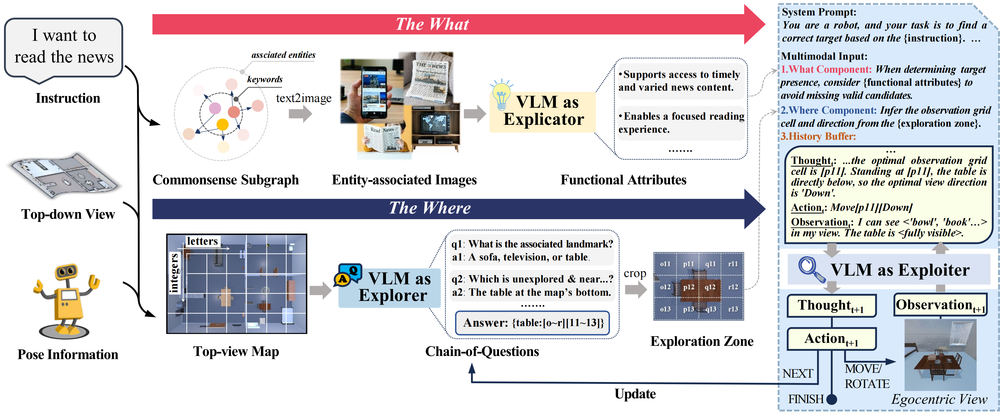

Object search is an essential skill for persistent in-home agents. However, this task is highly challenging due to the occasional ambiguity of natural language instructions and the open-ended environment. Existing solutions either adopt a single-run exploration strategy, which is ill-suited for persistent in-home agents, or rely on rigid language templates and additional semantic models which limit the agent's adaptability. We address this limitation and propose a method, coined What&Where, that leverages vision-language models to equip agents with a cognitive perspective on what to search and where to search. What&Where consists of two core components. The "what" component incorporates external knowledge to generate entity-associated images and summarizes functional attributes of the target, supporting instruction understanding and target assessment. The "where" component predicts the exploration zone from an accessible top-view and adjusts in response to planning feedback. Finally, guided by the "where" and "what" components, the agent alternately observes, reasons, and acts to perform local planning and complete the given task. Experiments on the ProcTHOR simulation platform demonstrate state-of-the-art performance of our approach, while real-world results highlight its strong transferability and generalizability.
In the "what" path, the VLM acts as an imaginator and generates entity-associated images by prompting with external commonsense knowledge. Their functional attributes are then summarized to interpret the instruction. In the "where" path, the VLM acts as an explorer and infers the task-relevant exploration zone from the top-down map through a chain-of-question reasoning process. Finally, the VLM acts as an exploiter, leveraging both “what” and “where” reasoning to select the optimal cell and viewing direction, iteratively exploring until the FINISH output. During this process, each NEXT action updates the exploration zone.
Real-world demonstrations across different types of daily demands and varying scene configurations.
different demand types
Different scene configurations under identical instructions